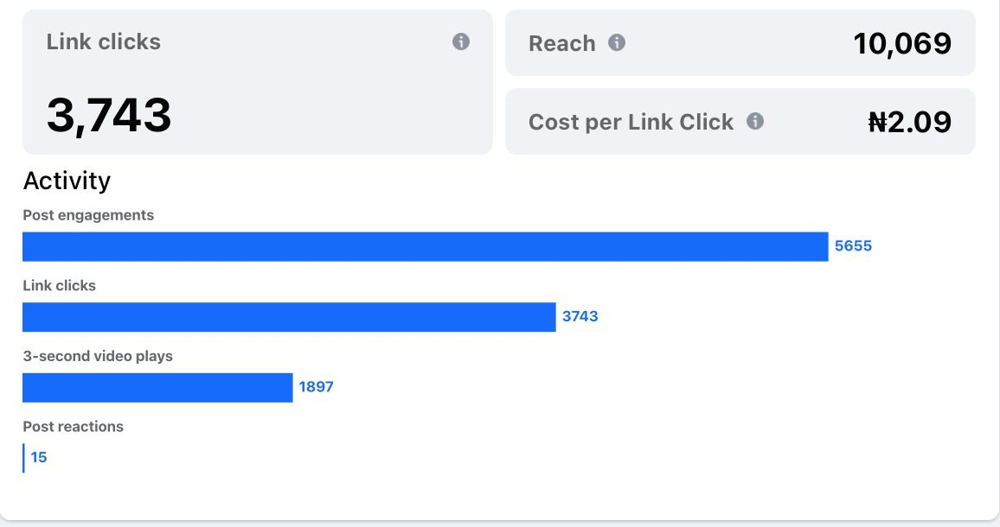
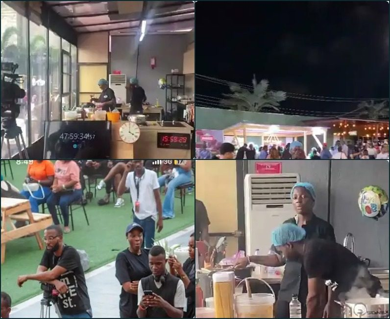
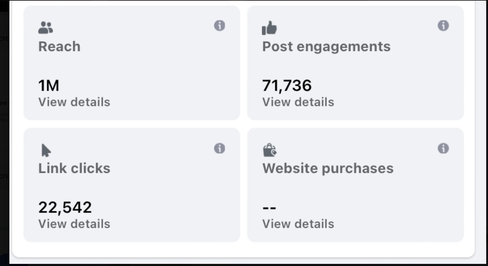

Over 1 million people reached for a world record attempt
Paid ads and a landing page that brought in 5,000+ registrations, plus attendee data and lifecycle messaging, for Hilda Baci’s first Cook-a-thon.
Sources: landing page registration records; Meta Ads, one Cook-a-thon campaign (other platforms not included)
A four-day public record attempt that needed an audience
Hilda Baci, a Nigerian chef and content creator managed as an Eggcorn Digital account, cooked live in Lagos from 11 to 15 May 2023 to break the record for the longest individual cooking marathon. Guinness World Records confirmed the new record on 13 June 2023: 93 hours and 11 minutes.
The attempt only works if people know about it, register and turn up, on site and online, for four days straight.
What I was responsible for
Awareness across platforms
Ran paid ads across platforms, from early test budgets to the full campaign.
One place to register
Set up the page every ad pointed to, where people registered to attend.
Clean records
Managed the registered attendee records collected through the page.
I also planned and rolled out the lifecycle messaging. Overall campaign planning was led by teammates at Eggcorn.
Start small, check the numbers, then scale
Paid ads
The early ads reached 10,069 people and drove 3,743 link clicks at ₦2.09 per click: about one in three people reached clicked through. That signal justified scaling the spend.

One path from ad to attendee
Every platform sent people to the same registration page, so sign-ups were counted in one place. More than 5,000 people registered. Lifecycle messages kept registered attendees updated, sent each person their access code and shared practical event information. The same flow later gave Hilda Baci Academy sign-ups their access.
On the ground

The campaign in numbers
- 5,000+ registrations on the landing page
- 1M+ people reached by one Meta campaign alone, one of several across platforms
- 71,736 post engagements and 22,542 link clicks on that campaign
- The record stood: 93 hours 11 minutes, confirmed by Guinness World Records

Record details: Guinness World Records, June 2023
How I run a campaign
Test before you scale
Early ads proved the click-through at ₦2.09 a click before more budget went in.
One journey, end to end
Ad, page, registration, data and follow-up built as one system.
Reach that turns into presence
The goal was people registered, on site and watching, not impressions for their own sake.